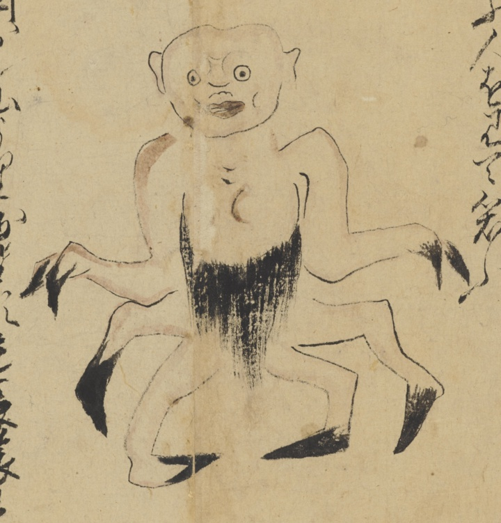

毛坊；ケボウ，蟹；カニ，蝦；エビ

毛坊。蟹や蝦が化けたもの。腰蓑のようなものがある。手の指は二本で先端が黒い。四つ足で先端が黒い。禿頭。蟹の甲羅のような顔。
著作者：長岡多門／出典：親書誌：U426_nichibunken_0448：諸国妖怪図巻／日付：2019／資源識別子：U426_nichibunken_0448_0001_0005
Copyright (c)2010- International Research Center for Japanese Studies, Kyoto, Japan. All rights reserved.